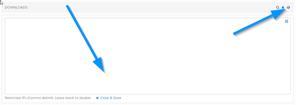

Restrict Access to Downloads by IP Address
If shown, click to show box to enter IP addresses. If set, only access via these IP addresses is allowed. Useful if you
think some downloads are being shared or abused.

For bigger textarea, click the crosshair, top right, in the textarea box. Click "Close & Save" to save and close box.